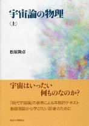
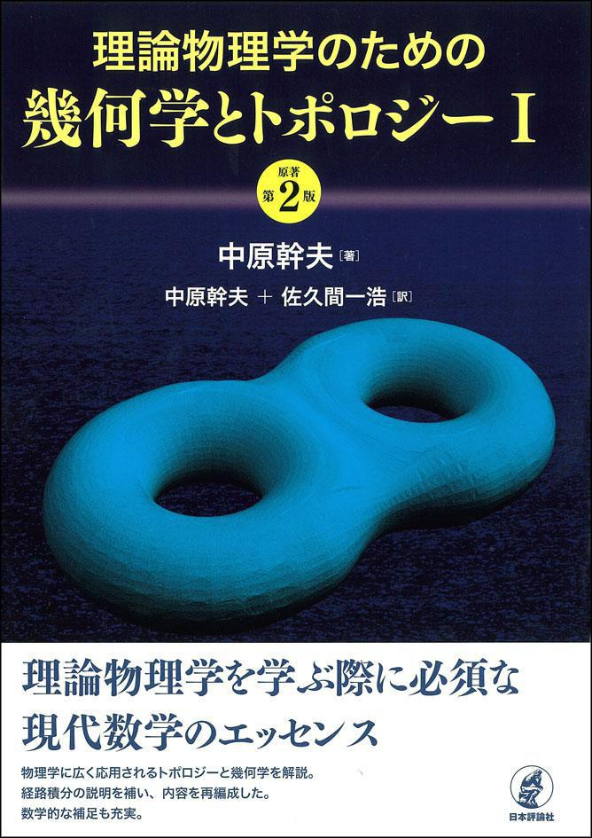
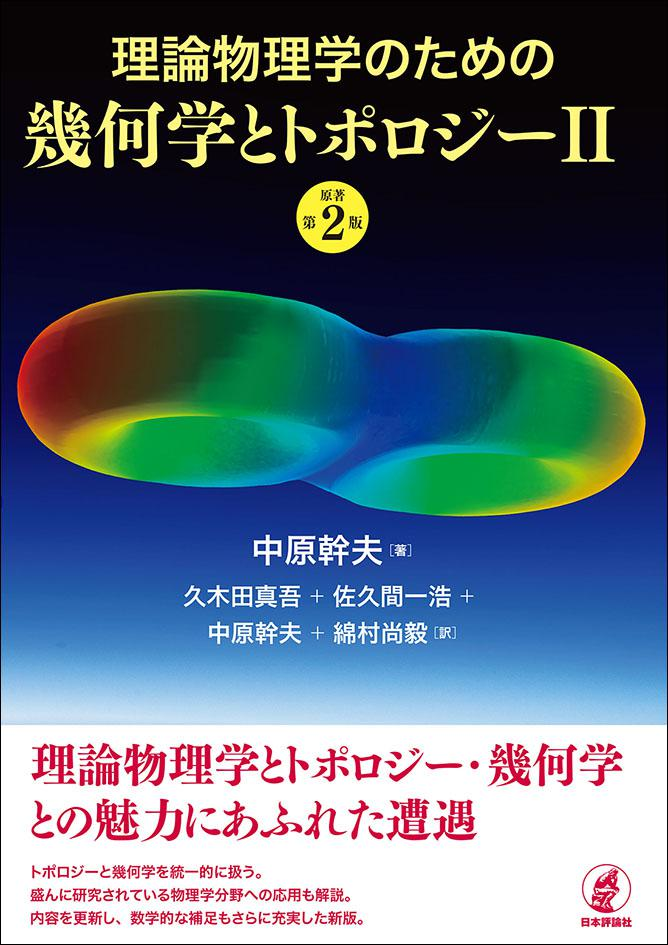
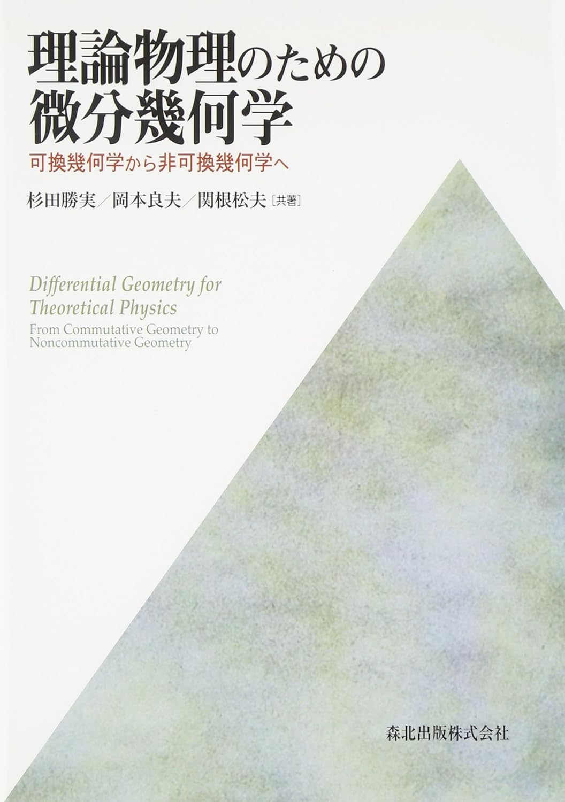
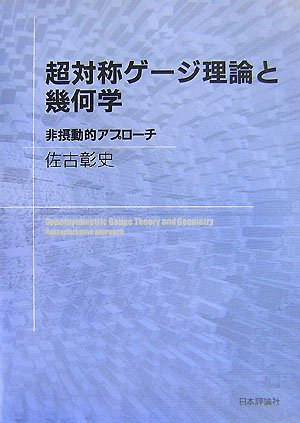
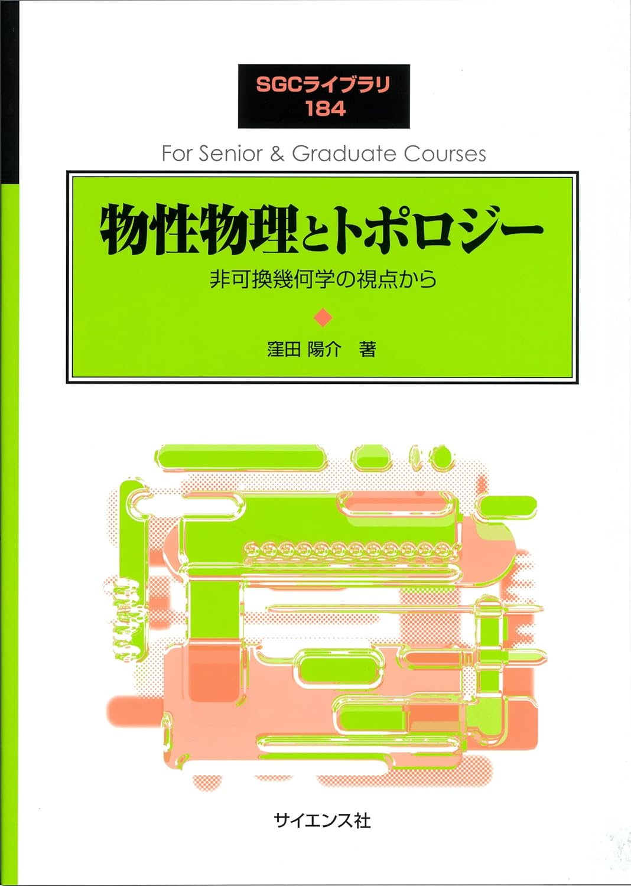
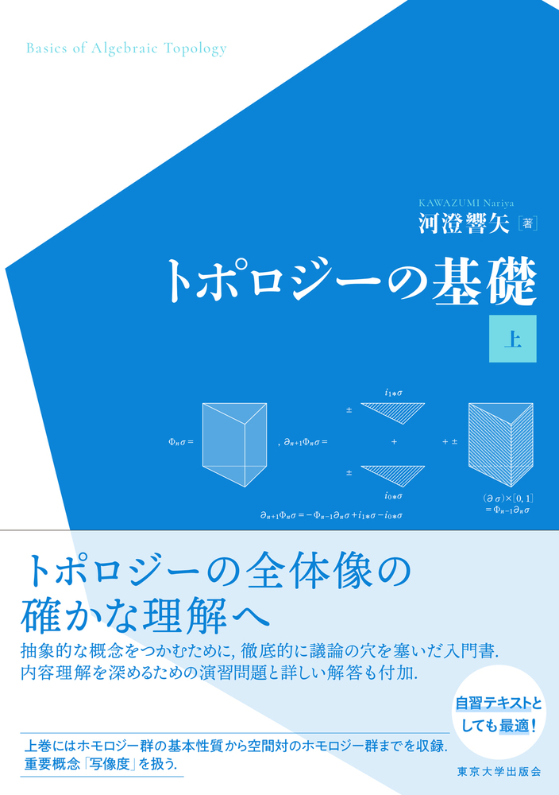
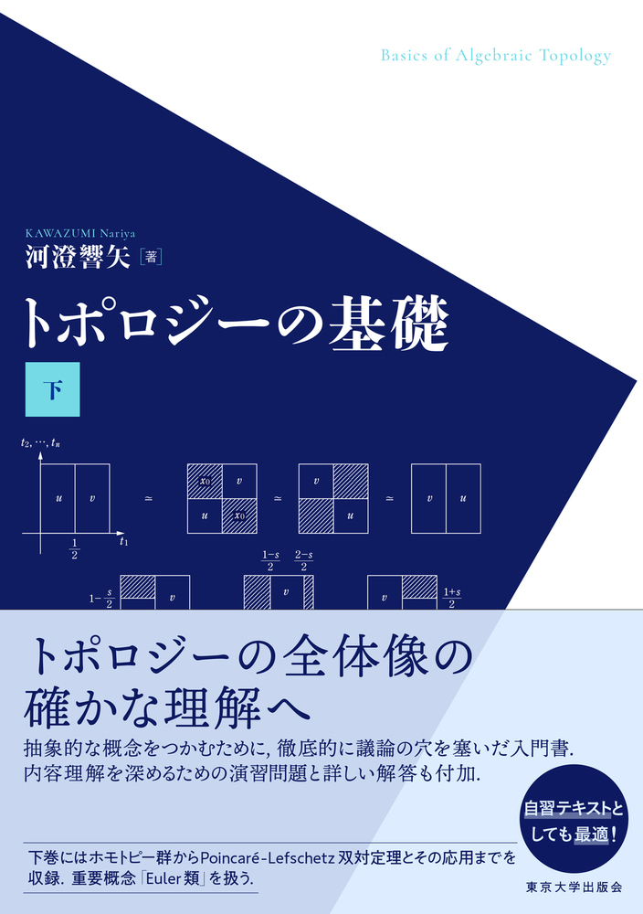
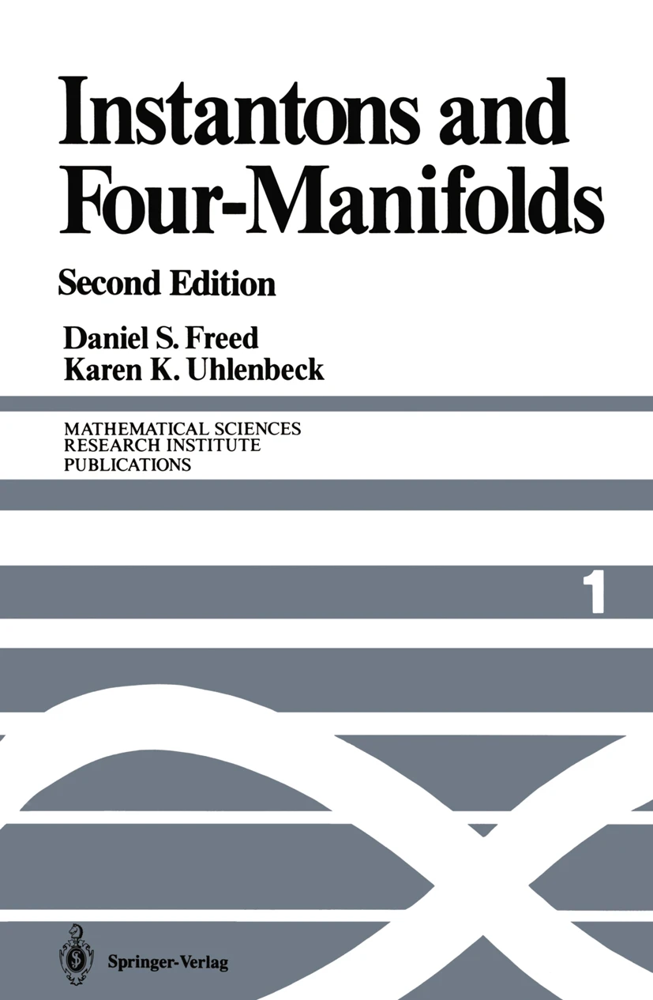

本の紹介
印象に残ってる本(2025年)
接続の微分幾何とゲージ理論[新装版]
- 著者: 小林 昭七
- 出版社: 裳華房
- 出版年: 2004
誤植やnotationが酷い部分が他の本と比べて多いが、微分幾何の基礎から数学としてのゲージ理論に接続できる本として優秀だと思った。特に好きなパートは5.4章(Yang-Mills接続)と6.3章(instanton数)で、6.4,5章はFreed Uhenbeckの理解に役立った。物理の非可換ゲージ理論を学ぶための本ではないが、非可換ゲージ理論やその先の理論物理の幾何学的な理解をしたい物理学科にもおすすめしたい。下巻の8章(インフレーションとゆらぎ、重力波の生成)も面白い話が多くておすすめしたい。

宇宙論の物理
- 著者: 松原 隆彦
- 出版社: 東京大学出版会
- 出版年: 2014
CKM行列やシーソー機構などの素粒子論的宇宙論や現象論、宇宙の熱的性質についても書かれている物理学科のための宇宙論の本。個人的には2章の熱的性質の話が面白いと思った。3,4章はPeskin Schroederなどの標準的な場の量子論の本を少し読んでいれば理解できる内容だが、5章の「素粒子標準モデル」はQFTの本を地道にやっても理解するのに時間がかかる内容が多い。この本は比較的self-consistedに書かれているので、その先の素粒子論的な宇宙論の話に気軽に入門できるいい本だと思う。
物理学徒のための幾何学ガイド
おすすめの専門書(物理)
理論物理とトポロジー

理理論物理学のための幾何学とトポロジーⅠ
- 著者: 中原 幹夫
- 出版社: 日本評論社
- 出版年: 2018
ⅠとⅡで難易度が異なるので分けて書くことにする。 本当に基礎的な集合と位相が分かっていれば読める物理のための位相幾何の名著。 多様体を学ぶ前に単体複体のホモロジー群・基本群・ホモトピー群をやっているが、個人的には5章の多様体を学んでからでもよい気がする。ただ、同値類に慣れてない物理系の人はホモロジー群を初めに学んで集合の基礎的な用語に慣れとくべきかもしれない。いずれにせよ、6章でchain上での積分を行うのでそれまでに学ぶ必要はある。 厳密な数学的定義や定理の証明を削る代わりに直感的に理解できるような話も多くあるので、数学科の人も覗いてみる価値はあると思う。 また、2章に書かれている「物理学に現れるほとんどすべての空間はHausdorff性を満たす。以下に現れる空間は常にこの性質を満たすと仮定する。」を忘れてはいけない。1章は流して読むべきものだと思うが、QFTを勉強した後に見てみるとありがたいことを書いてくれている。ここの内容は1巻で詳しく説明されているので見てみると良いだろう。

理論物理学のための幾何学とトポロジーⅡ
- 著者: 中原 幹夫
- 出版社: 日本評論社
- 出版年: 2021
1巻の続きだが、基礎的なホモロジー、多様体、リーマン幾何を知っている人ならⅡからでも読めるだろう。 他の本ではあまりないファイバー束や特性類、指数定理などの発展的なトピックについて触れられている。 また、一巻よりもアノマリーやBerry位相、超対称性量子力学、ボソン的弦理論などの物理的なトピックが多い印象がある。 個人的には特性類と指数定理の章の計算がよくまとまっていて分かりやすかった。やはり数学的な説明が足りない気がするが、理論物理のための幾何学としては現時点で最適な入門書だと思う。
微分幾何学
ゲージ理論・一般相対論のための微分幾何入門
- 著者: 佐古 彰史
- 出版社: 森北出版
- 出版年: 2021
ベクトル解析から数学のゲージ理論やリーマン幾何が物理のどこで出現するかを把握できる最速の本だと思う。その犠牲として、数学的な論理の美しさや定義の正確性を削っている気がするので、本格的に多様体、微分幾何を学びたい人はこれ以外の本も必要だと思う。しかし、この本が出版された2021年から今まで、佐古微分幾何の影響で色んな学部生や中高生が一般相対論や多様体、微分幾何に興味を持ち始めたのを見てきた。私もその一人である。そういう初学者を優しく受け入れてよりレベルの高い場所へ連れていってくれる本としてはものすごく意義があると思う。

理論物理学のための微分幾何学
可換幾何学から非可換幾何学へ
- 著者: 杉田 勝実, 岡本 良彦, 関根 松夫
- 出版社: 森北出版
- 出版年: 2014
非可換幾何学(ここでは座標が非可換なもの)について書かれている数少ない物理数学本である。超弦理論などで自然に出現する非可換な時空に対するアプローチとして非可換幾何学や行列模型は有効であるとされている。A. Connes らが開拓したspectral tripleからは少し外れることに注意が必要。 定義定理証明という数学のスタイルではなく、物理の教科書のスタイルで書かれているので数学書に慣れている人からすると分かりにくいかもしれないが、定義や定理の気持ちはいたるところに散りばめられているので読みやすいと思う。6章までの内容は標準的なものが多いので通常の微分幾何を学びたい人にもおすすめです。
場の理論と幾何学
場の理論の構造と幾何
- 著者: 山崎雅人
- 出版社: サイエンス社
- 出版年: 2019
幾何学的な手法を用いて場の理論全体のなす"構造"を考えている山崎氏によるマニアックな本。理論物理を眺めると自然に出てくる幾何学の構造に注目して、7章で3次元多様体とN=2超対称ゲージ理論との関係まで書かれている。 演習問題も非常に価値のあるものが多く、場の理論の理解を深めるのに役に立つ。ここまで色々なことが書かれている幾何学的ゲージ理論の本がある時代に生まれてよかったなとつくづく思う。

超対称ゲージ理論と幾何学
- 著者: 佐古 彰史
- 出版社: 日本評論社
- 出版年: 2007
場の理論を知らない数学者でも読めるように書かれた幾何学と超対称ゲージ理論の関連トピックについての本。内容はそこそこ物理の話が多いので、標準的な微分幾何学を学んだあとに幾何学的なゲージ理論やTFTを学びたい人におすすめできる。 Seiberg-Witten理論と双対性やネクラソフの公式など、現代的なhep-thの話題が多く含まれているが、self-consistedな本ではないと思うので他の本や論文と併用して読むのが良いだろう。
物性物理とトポロジー

SGC 184 物性物理とトポロジー
非可換幾何学の視点から
- 著者: 窪田 陽介
- 出版社: サイエンス社
- 出版年: 2023
spectral tripleなどの非可換幾何学は物性物理などにも応用されている。数学的に書かれた物性物理と非可換幾何学の関連についてはこの本がいいとされている。 非可換幾何学の視点からC*環や捻れ同変K理論、租幾何学など、非可換幾何学を用いて物性物理に現れる対称性を包括的に取り扱う(らしい)。物性物理と書かれているが、これが読める物理学科の学部生はほんの一握りだと思われる。前提知識として、微積線形集合位相はもちろんのこと、ルベーグ積分や関数解析、位相幾何を用いるらしい。
おすすめの専門書(数学)
多様体
多様体の基礎
- 著者: 松本 幸夫
- 出版社: 東京大学出版会
- 出版年: 1988
多様体の数学書の中では最も読みやすいと思われる。 多様体論の前提となる集合・位相の基礎から解説があり、導入としては非常に優れている。特に2章の局所座標の記述は極めて丁寧で、3章の接ベクトル空間までは挫折することなく進めるだろう。ただ、多様体論の核心は局所的な性質（ユークリッド空間的な理解）だけでなく、大域的な構造の把握にある。第4章以降の部分多様体、ベクトル場、微分形式といったトピックにおいて、ラノベとして読むだけで十分な理解に至れる人はあまりいないと思う。(それでも十分読みやすいが)
An Introduction to Manifolds
- 著者: Loring W. Tu
- 出版社: Springer
- 出版年: 2010
標準的な多様体の本として有名である。Lie群とLie代数について章が与えられていることや、ホモロジーの計算として代表的なMV完全列についても記載があるのが特徴的であると思われる。また、Bott Tuで知られる”Differential Forms in Algebraic Topology”など、より高度な幾何学を学ぶ際には物理学科の学部生でも辞書としてTu多様体を持っていた方がよいと思う。
幾何学1 多様体入門
- 著者: 坪井 俊
- 出版社: 岩波書店
- 出版年: 2019
ユーグリッド空間での逆写像定理と陰関数定理から導入される多様体論の本格的な入門書。松本やTuと違って読みづらいが、何度も読み直しても味がするいい本です。ただ、数学の表記や基礎的な集合位相、解析、線形代数に慣れていない物理系の人には読みにくい本ではあると思う。
微分幾何学
微分形式の幾何学
- 著者: 森田 茂之
- 出版社: 岩波書店
- 出版年: 2005
多様体、ホモロジー、リーマン幾何、ベクトル束、ファイバー束に関する基礎的な話を展開しながら、それらに付随する微分形式の話を展開している本です。全体的に微分幾何学の気持ちに寄り添えるような記述が多くあり、初学でも読みやすいと思われる。また、各章の最後では定理の応用やMaurer- Cartan形式、Weil代数なども書かれており、とても楽しく読めた。しかし、5.3(e)に説明があるもののベクトルバンドルに値を取る微分形式や共変外微分をあまり用いていないので、他の本を読む際は曲率などの定義に注意して読む必要がある。

SGCライブラリ 23 微分幾何講義
- 著者: 二木 昭人
- 出版社: サイエンス社
- 出版年: 2003
Spin構造やDirac作用素、Seiberg-Witten方程式まで書かれている。まだ100ページほどしか読めてないが、個人的には主束の接続や特性類に関する話が数学的に分かりやすくて良かった。理論物理でも出てくるような微分幾何の話題も多くあり、ファイバー束にある程度慣れた物理学徒は読んでみると面白いかもしれない。
接続の微分幾何とゲージ理論[新装版]
- 著者: 小林 昭七
- 出版社: 裳華房
- 出版年: 2004
初学者の場合、ここでいうゲージ理論とは物理のゲージ理論とは別であると考えた方が良い。1章は多様体だが1ページ目からベクトル束の話をしていたり、2章の「接続」もベクトル束End Eなどをすぐに用いていたりなど、微分幾何の初学者がスラスラ読める内容ではないと思う。しかし、微分幾何にある程度慣れ、定義の揺れや誤植に耐性が付くと5,6章のゲージ理論に入門できるようになっている。特に、(5.1)～(5.4)(6.1)(6.3)の説明はいくつか誤植があるものの他のゲージ理論の本より分かりやすかった。
トポロジー
トポロジー (岩波オンデマンドブックス)
- 著者: 田村 一郎
- 出版社: 岩波書店
- 出版年: 2013
代数トポロジーの有名な入門書として知られているが、本の中心はいわゆる単体複体のホモロジー群の計算である。A5サイズなので文字は読みにくく、太字の重要単語に英訳が付いてないので困るが、ホモロジー群に関する定理は色々載っている。個人的には(co) chain complex, (co) chain mapの一般論を先に勉強して単体複体の(コ)ホモロジー、特異(コ)ホモロジー、その気持ちや計算法や諸定理、多様体との関連を見て、さっさと特異ホモロジーに行くべきだと思うがどうなのだろう。

トポロジーの基礎(上)
- 著者: 河澄 響矢
- 出版社: 東京大学出版会
- 出版年: 2022
特異ホモロジー、基本群を中心とする代数トポロジーの本である。 絵が図式しかなくて怖い印象があったが、行間が丁寧に埋められていてとても読みやすい。前提知識として基礎的な位相空間論は必要だが、できれば単体複体のホモロジー群やその計算法まで知っているとモチベーションが保たれる気がするので良いと思う。

トポロジーの基礎(下)
- 著者: 河澄 響矢
- 出版社: 東京大学出版会
- 出版年: 2022
上巻の続きで、ホモトピー群や特異コホモロジー群、普遍係数定理、Poincaré双対定理の応用などが書かれている。
4次元多様体

Instantons and Four-Manifolds
- 著者: Daniel S. Freed , Karen K. Uhlenbeck
- 出版社: Springer
- 出版年: 1991
4次元多様体上のSU(2)束モジュライ空間やDonaldson理論について書かれた名著である。物理学徒向けに書かれた本ではないが、2章は物理の古典的非可換ゲージ理論との自然な対応を学べるので2章だけでも読んでみるといいかもしれない。 前提知識として、微分幾何学や基礎的なトポロジーの知識が必要である。小林ゲージを読み終えたあとに読むのがちょうどいいかもしれない。